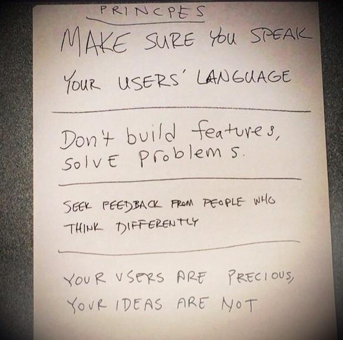

class: full, middle <div style="position: absolute; width: 100%; text-align: center; text-shadow: 1px 1px 1px #000; top: 30%;"> <h1 style="border:0; text-transform: uppercase;"><span class="highlight">Teemo Tebest<br />Data Journalist</span></h1> </div> <img src="img/teemo.png" style="width: 100%;" /> --- class: left, middle # Visualizing data into a story * <span class="highlight">Pension</span> Calculator * <span class="highlight">Municipality</span> Radar * Exercises * Worse of the worse ```javascript if (Motivation === true) { if (Implemantion === true) { return Outcome } } ``` --- class: left, middle # How many <span class="highlight">threes</span>? <img src="img/kolmoset_1.png" alt="" style="width: 600px; style:inline;"/> --- class: left, middle # <span class="highlight">20</span> <img src="img/kolmoset_2.png" alt="" style="width: 600px; style:inline;"/> --- class: left, middle # <span class="highlight">Story</span> When Can You Retire And For How Long <p><span class="highlight">Motivation</span> Pension system reform</p> <p><span class="highlight">Implementation</span> Embedded calculator</p> <p><span class="highlight">Outcome</span> One of the most read stories in 2016</p> <div style="float: right"><a href="https://docs.google.com/spreadsheets/d/1Gj3uqUzWOUeDGamxc8Ig_Owu-EfZzzs-MaLSLESf0C4/edit#gid=1128173612" target="_blank">» data</a></div><br /> <div style="float: right"><a href="https://yle.fi/uutiset/3-9273402" target="_blank">» story</a></div><br /> <div style="float: right"><a href="https://dashboard.yle.fi/article/3-9273402" target="_blank">» numbers</a></div><br /> <div style="float: right"><a href="https://ebuddj.github.io/2019-population/" target="_blank">» story2</a></div> --- class: left, middle # One of most read stories in 2016, <span class="highlight">Why?</span> * Calculator <span class="highlight">placed on top</span> of the article * Had a <span class="highlight">default result</span> * Easy to use * Simple and <span class="highlight">“Suprising”</span> message * <span class="highlight">Shareable</span> result, over 100,000 FB actions * Funny → <span class="highlight">Memorable</span> --- class: left, middle # Challenges / Obstacles * From <span class="highlight">Excel</span> to story * <span class="highlight">Two datasets</span> → pick more relevant * Use of <span class="highlight">understandable language</span> and terms --- class: left, middle # Exercise Make up as many ways to visualize numbers <span class="highlight">75</span> and <span class="highlight">37</span>. Sketch on paper. <span class="highlight">Take 5 minutes</span> --- class: left, middle # <span class="highlight">Examples</span> <img src="img/numbers.png" alt="" style="width: 700px;" /> --- class: left, middle # <span class="highlight">Story</span> What is the status of your municipality <p><span class="highlight">Motivation</span> Upcoming elections</p> <p><span class="highlight">Implementation</span> Municipality Radar</p> <p><span class="highlight">Outcome</span> Noda Awards '17 nominee</p> <div style="float: right"><a href="https://docs.google.com/spreadsheets/d/15M_MyAudZXCMASTlbP4SSA3BTQFlw7RRxVwa47uDcEs/edit#gid=0" target="_blank">» data</a></div><br /> <div style="float: right"><a href="https://yle.fi/uutiset/3-9490180" target="_blank">» story</a></div><br /> <div style="float: right"><a href="https://dashboard.yle.fi/article/3-9192528" target="_blank">» numbers</a></div> --- class: left, middle # Noda Awards '17 nominee, <span class="highlight">Why?</span> * Quick <span class="highlight">Overview</span> → <span class="highlight">Details</span> on Demand * <span class="highlight">Personalized</span> and <span class="highlight">Familiar</span> feel * Municipality arms, Subtitle, Background map, Street view, Municipality text * We <span class="highlight">crowdsourced</span> candidate test questions * Was adopted by municipalities and by public * <a href="http://yle.fi/uutiset/3-9252893" target="_blank">Data and process was opened</a> --- class: left, middle # Challenges / Obstacles * <span class="highlight">Getting data</span> for current municipalities * Merging various data sources and formats into one sheet * Learning <span class="highlight">statistical analysis</span> and standard deviation * Getting unified municipality texts and handling updates * <span class="highlight">Finishing and polishing</span> * Technical issues --- class: center, middle # <span class="highlight">4 things</span> I like to keep in mind  --- class: left, middle # Data visualizations gone <span class="highlight">wrong</span> * <a href="http://livingqlikview.com/the-9-worst-data-visualizations-ever-created" target="_blank">The 9 Worst Data Visualizations Ever Created</a> --- class: left, middle # Data visualization <span class="highlight">success</span> * <a href="https://www.youtube.com/watch?v=-yIHxOui9nQ" target="_blank">How temperature has changed in each country since 1900</a> --- class: left, middle # One more to pick your brain <img src="img/b25b.png" alt="" style="width: 200px; display:inline;" /> <img src="img/blog_raf_bullet_holes_0.jpg" alt="" style="width: 500px; display:inline;"/> --- class: center, middle # Thank you! <span class="highlight">Questions?</span> <img src="http://upload.wikimedia.org/wikipedia/commons/thumb/f/f1/Heart_coraz%C3%B3n.svg/1024px-Heart_coraz%C3%B3n.svg.png" alt="" style="width: 300px;"/><br /> Teemo Tebest, <a href="http://twitter.com/teelmo"><span class="highlight">@teelmo</span></a>